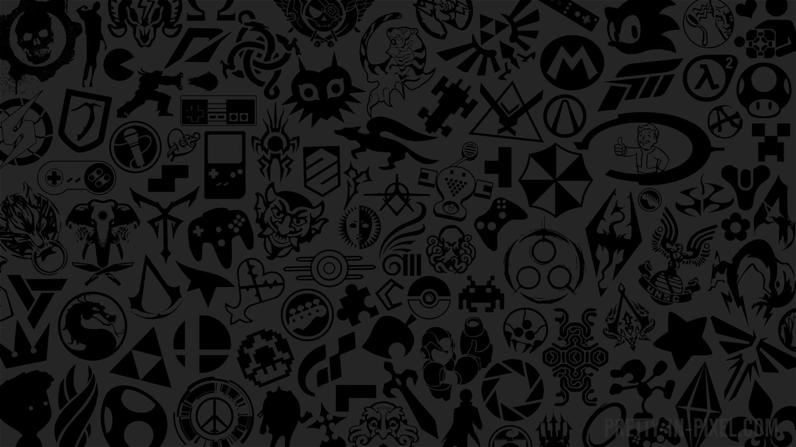

ABOUT THE DUKL
DUKL is a group of gamers who have, and still do, play various video games together. While never having picked a specific game to focus on, Minecraft is the longest running (on and off) game the group has played. Numerous other games and activities have been taken up by the group over the years, however, many of which can be found below.
Several members of DUKL actively stream and have made a few videos. Outside of video games, the group likes to relax and hang out with each other and have had some interesting times together.
GAMES PLAYED
WHEN DO WE PLAY?
Given most of DUKL's members are in the US East time zone, most games are played in the afternoon, evening, and night hours of the US East.

EXACT! While the time the group plays varies based on work and/or school schedules, most often things will hit off at around 5PM EST (9PM GMT) and start filtering off at around midnight EST (4AM GMT).
Feel free to message us at anytime if you need something, however, (links and contact info can be found in the 'Social Media' tab) as there is often someone awake 24/7 given time zones.